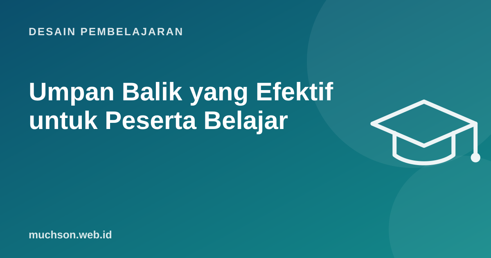

Beranda › Artikel › Desain Pembelajaran
Desain PembelajaranUmpan Balik yang Efektif untuk Peserta Belajar
Umpan balik termasuk faktor yang paling kuat memengaruhi belajar, tetapi juga yang paling bervariasi. Kluger dan DeNisi (1996) menemukan bahwa dalam sekitar sepertiga kasus, umpan balik justru menurunkan kinerja. Bedanya terletak pada apa yang dikomentari dan bagaimana caranya.

Tiga pertanyaan umpan balik
Hattie dan Timperley (2007) merumuskan bahwa umpan balik yang efektif menjawab tiga pertanyaan:
Empat tingkat umpan balik
Contoh perbaikan kalimat
| Kurang membantu | Lebih membantu |
|---|---|
| "Bagus." | "Pemisahan validasi ke fungsi tersendiri membuat kodemu mudah dites. Pertahankan pola ini." |
| "Kurang rapi." | "Tiga fungsi di file ini lebih dari 50 baris. Pilih satu dan pecah menjadi bagian dengan nama yang jelas." |
| "Presentasinya perlu ditingkatkan." | "Slide 4 berisi 9 poin. Coba sisakan satu pesan utama dan pindahkan data ke grafik." |
| "Nilai 70." | "Analisismu kuat di bagian data. Untuk naik ke level Mahir, tambahkan alasan untuk setiap rekomendasi." |
Waktu dan jumlah
- Segera untuk keterampilan dasar dan kesalahan prosedur, sebelum kesalahan menjadi kebiasaan.
- Sedikit tertunda bisa lebih baik untuk tugas kompleks, memberi ruang peserta berpikir dulu.
- Sedikit tapi tepat: dua atau tiga poin terpenting lebih berguna daripada 20 coretan merah.
- Beri kesempatan menindaklanjuti. Umpan balik tanpa kesempatan revisi sering tidak dibaca.
Penelitian Butler (1988) menemukan bahwa ketika komentar diberikan bersama nilai angka, siswa cenderung hanya melihat nilainya. Pertimbangkan memberi komentar dulu, nilai belakangan.
Umpan balik dalam pelatihan orang dewasa
Model sederhana yang sering saya pakai dalam role play pelatihan: amati, dampak, saran. "Saat pelanggan menyebut kecewa, kamu langsung menjelaskan kebijakan (amati). Pelanggan terdengar makin kesal (dampak). Coba akui perasaannya dulu dalam satu kalimat sebelum menjelaskan (saran)."
Tanya jawab
Bagaimana memberi umpan balik kepada atasan atau peserta senior?
Apakah umpan balik positif perlu?
Bagaimana dengan umpan balik otomatis di e-learning?
Sumber dan bacaan lanjut
- Hattie dan Timperley (2007): The Power of Feedback, Review of Educational Research
- Kluger dan DeNisi (1996): The effects of feedback interventions on performance, Psychological Bulletin
- Butler (1988): Enhancing and undermining intrinsic motivation, British Journal of Educational Psychology